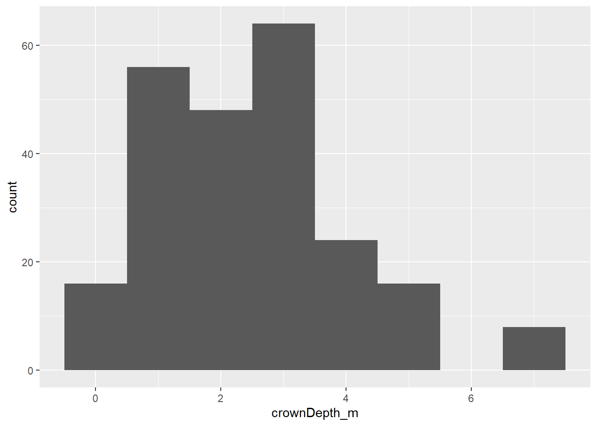

Let’s say we wanted to combine several of the preceding techniques to get a final dataset with the following transformations:
Keep only maples from the city of Modesto, CA
Keep only columns for ID, city, tree height, crown height, DBH, and stem DBH
Add a column for crown depth
Convert the DBH stem data into two columns containing stem number and diameter
We’ve seen all of these techniques, and could write a code block that does all of it:
#filter only Modesto maple treesmodestoMaples1<-filter(treeData,City=="Modesto, CA"&str_detect(CommonName,"maple"))#select only ID, city, tree ht, crown ht, DBH, and stem DBHmodestoMaples2<-select(modestoMaples1,DbaseID,City,`TreeHt (m)`,`CrnHt (m)`,`DBH (cm)`,starts_with("dbh"))#create a column for crown depthmodestoMaples3<-mutate(modestoMaples2,crownDepth_m=`TreeHt (m)`-`CrnHt (m)`)#pivot stem numbers to column with corresponding DBH valuesmodestoMaples4<-pivot_longer(data=modestoMaples3,cols=dbh1:dbh8,names_to="stemNum",values_to="dbhMeasure")modestoMaples4
# A tibble: 232 × 8
DbaseID City `TreeHt (m)` `CrnHt (m)` `DBH (cm)` crownDepth_m stemNum
<dbl> <chr> <dbl> <dbl> <dbl> <dbl> <chr>
1 1 Modesto, CA 2 0.5 2.5 1.5 dbh1
2 1 Modesto, CA 2 0.5 2.5 1.5 dbh2
3 1 Modesto, CA 2 0.5 2.5 1.5 dbh3
4 1 Modesto, CA 2 0.5 2.5 1.5 dbh4
5 1 Modesto, CA 2 0.5 2.5 1.5 dbh5
6 1 Modesto, CA 2 0.5 2.5 1.5 dbh6
7 1 Modesto, CA 2 0.5 2.5 1.5 dbh7
8 1 Modesto, CA 2 0.5 2.5 1.5 dbh8
9 43 Modesto, CA 12 10.5 40.1 1.5 dbh1
10 43 Modesto, CA 12 10.5 40.1 1.5 dbh2
# ℹ 222 more rows
# ℹ 1 more variable: dbhMeasure <dbl>
As you may have noticed, this process starts to get cumbersome, and keeping track of multiple objects with similar names can easily lead to errors. In an ideal world, our original dataset will pass through a series of transformations, producing an object with the desired changes, without having to store each iteration as .
A helpful technique to streamline code and cut down on the number of objects being handled is to use the pipe (%>%) operator. Pipes are used to create a flow from one function to the next in a series of transformations. The basic structure works something like this pseudocode below:
Here, newObject will be where we assign the result of our transformations, and we put the dataset to be transformed (originalData) on the other side of the assignment operator (<-). This is followed by a pipe1 (%>%), which can be translated as “take the result of the preceding code and send it as the first argument in the next function”. Since the most of the tidyverse packages take a table as their first argument, the first pipe above sends the original data to functionA. The arguments given to the function do not include the dataset, but can refer to its variables by name. This result can be be piped into another function, and this process repeats until the data transformations are complete.
# A tibble: 232 × 8
DbaseID City `TreeHt (m)` `CrnHt (m)` `DBH (cm)` crownDepth_m stemNum
<dbl> <chr> <dbl> <dbl> <dbl> <dbl> <chr>
1 1 Modesto, CA 2 0.5 2.5 1.5 dbh1
2 1 Modesto, CA 2 0.5 2.5 1.5 dbh2
3 1 Modesto, CA 2 0.5 2.5 1.5 dbh3
4 1 Modesto, CA 2 0.5 2.5 1.5 dbh4
5 1 Modesto, CA 2 0.5 2.5 1.5 dbh5
6 1 Modesto, CA 2 0.5 2.5 1.5 dbh6
7 1 Modesto, CA 2 0.5 2.5 1.5 dbh7
8 1 Modesto, CA 2 0.5 2.5 1.5 dbh8
9 43 Modesto, CA 12 10.5 40.1 1.5 dbh1
10 43 Modesto, CA 12 10.5 40.1 1.5 dbh2
# ℹ 222 more rows
# ℹ 1 more variable: dbhMeasure <dbl>
The above code uses less text overall, which means less redundant typing on your part, and is an example of an approach known as method chaining. It also has some qualities that help maintain organization. First, the process only requires a single assignment, and it only produces one object. Second, each transformation function is indented beneath this assignment, providing a clear outline of the processes used to modify the data (first filter, then select, etc.). This improves code readability, and makes it easier to keep track of how your data is changing.
modestoMaplesPlot<-treeData %>%filter(City=="Modesto, CA"&str_detect(CommonName,"maple")) %>%#only Modesto maplesselect(DbaseID,City,`TreeHt (m)`,`CrnHt (m)`,`DBH (cm)`,starts_with("dbh")) %>%#select columnsmutate(crownDepth_m=`TreeHt (m)`-`CrnHt (m)`) %>%#add crown depthpivot_longer(cols=dbh1:dbh8,names_to="stemNum",values_to="dbhMeasure") %>%#pivot stems to get stem numsggplot(aes(x=crownDepth_m)) +#histogram of crown depthsgeom_histogram(binwidth =1)
So why didn’t it plot? The answer here is because the code is storing the ggplot output to the modestoMaplesPlot object. So we just need to call that object to see our plot:
modestoMaplesPlot

Connecting pipes outside of the tidyverse
What about if the function doesn’t come from the tidyverse packages? Plenty of packages are written using Base R, so is there a way to integrate these into a pipeline?
The answer is: yes, but how it works depends on the function. If the function takes a table as it’s first argument, then it should work just fine. For example, the colMeans function, which calculates the mean for each column in a dataset:
But many other functions assume the objects being given as the first arguments are something else. For example, let’s say we wanted to run a Spearman’s rank correlation on the relationship between DBH and tree height. We might write a pipeline that looks like this:
The problem here is that the cor.test function is expecting the first two arguments to be vectors, but it doesn’t know that the arguments correspond to columns in the tibble coming through the pipe. We need a way to tell R that we’re using the data from the pipeline in this function. To do this, we can wrap the Base R function in curly braces ({}) and then refer to columns in the tibble by preceding them with .$. The fullstop here (.) is a placeholder for the tibble being fed to the function:
Warning in cor.test.default(.$`DBH (cm)`, .$`TreeHt (m)`, method = "spearman"):
Cannot compute exact p-value with ties
Spearman's rank correlation rho
data: .$`DBH (cm)` and .$`TreeHt (m)`
S = 154206, p-value < 2.2e-16
alternative hypothesis: true rho is not equal to 0
sample estimates:
rho
0.9259037
While pipes are a convenience for many standard data-cleaning operations, they are by no means required. I recommend trying out some operations with and without pipes. You may end up deciding that these are not your cup of tea and sticking with what we’ve already covered.
Try it yourself!
Use the different tidyverse functions to create a pipeline to wrangle raw data into the desired form. The datasets are all in the modeldata package:
Body mass and flipper length for penguins from Biscoe and Dream islands with a body mass over 400 grams.
Price, number of baths, and square meters for three-bedroom homes in the Roseville, Orangevale, and Citrus Heights neighborhoods of Sacramento.
Species, year, and diameter (converted from mm to inches) for the top 20 predator scat by mass.
This pipe operator is the original pipe from the magrittr package; another pipe operator, the Base R pipe, is also available, and looks like this |>. They function more or less the same, but some sources will use one and some will use the other, so it’s a good idea to be familiar with both.↩︎